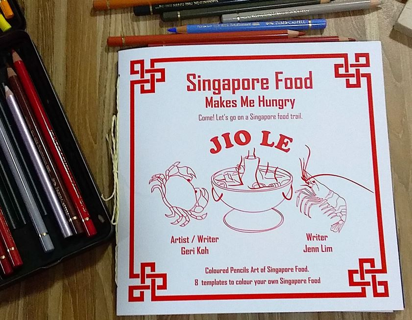

SINGAPORE FOOD MAKES ME HUNGRY
A local food art journal with coloured-pencils illustrations of eight popular local food in
Singapore. The book also contains colouring activity.
Singapore Food Makes Me Hungry

Posted by: ARTSENCE@SOUTH BRIDGE PTE LTD
Singapore Food Makes Me Hungry is penned by two of Artsence@SouthBridge’s founders Jennifer Lim (Jenn)
and Geraldine Koh (Geri) with the latter also the book’s illustrator. Both Jenn and Geri are very familiar and
enamoured with Singapore’s local food scene having been raised and lived in Singapore for most of their lives.
The book is a celebration of Singapore’s ubiquitous hawker culture, containing illustrations and detailed
descriptions of many unique local dishes. Many of these dishes can traced back to each of Singapore’s major
racial groups which have many popular dishes sold in hawker centres across the island.
The front cover conveys a design meant to evoke memories of ordering takeaway from a ‘zi char’ stall. ‘Zi char’
is a Hokkien phrase describing stalls which sell Chinese dishes meant for sharing and customers can choose
from at least twenty different dishes of vegetables, meat, seafood, rice and noodles. The food may be consumed on site or if customers choose to eat it elsewhere, it is usually packed into a thin white paper box.
The phrase ‘jio le’ can be found on the front cover and it is a Teochew phrase meaning to invite people and
reects Artsence@SouthBridge inviting readers to go on a gastronomical journey as they ip through the book.
The back of the book contains more than just the standard paragraphs about the authors because readers will
nd pieces of paper containing printed sketches of the dishes featured in the book. These sketches are not
coloured to allow readers to paint the them using colour pencils. How they paint them is of course left to the
preference of the readers.
Click here to find out more